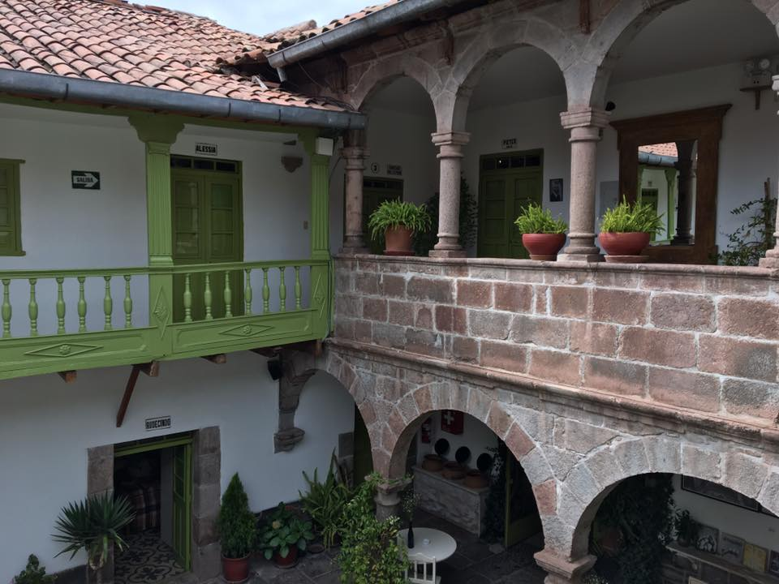

Itinerary: Peru in Two Weeks
Day 1: Travel
Depending on where you are coming from, traveling will likely take you the majority of the first day. Upon arrival in Lima, make sure to use one of the certified taxi services to get to your hotel (we used Taxi Green).
For accomodation in Lima, Casa Cielo in the Miraflores neighborhood is reasonably priced, well-kept and in a great location. If you arrive in time, consider heading out to the Miraflores boardwalk for sunset or taking a stroll in Parque Kennedy.
Day 2: Lima
To pack Lima into one day, start out with the daytime food tour from The Lima Gourmet Company. Your guide will pick you up from your hotel and then you will explore the Miraflores, Barranco & San Isidro districts while sampling local delicacies. We particularly enjoyed making ceviche and pisco sours during the cooking class part of the tour. The tour ends with a big meal at the Huaca Pucllana ruins - definitely come hungry!
We were still fairly jet-lagged at this point and spent the afternoon walking around Miraflores near our hotel. If you have more energy, you could explore the popular Museo Larco or head into the City Centre for a self-guided historical tour.
For dinner, we ended up eating at Astrid y Gaston, one of Lima's oldest upscale dining options with the famous Gaston Acurio as head chef. We unsuccessfully tried to get a reservation at Central, recently named the 4th best restaurant in the world. While Astrid was very good, it has been consistently falling on the world's best restaurants list. Try to get in at Central if possible!
For less expensive and extravagent options, Barrio, Quimera or Malabar may be good options.
Day 3: Lima - Cusco

On Day 3, wake up and head to the airport after breakfast. The flight from Lima to Cusco is inexpensive and much quicker than trying to take a bus through the mountains!
Upon arrival in Cusco, remember that you're likely going to need some time to acclimate to the altitude. At 15,000 feet, I'd highly recommend consulting a doctor about altitude sickness medication options. I definitely underestimated how this would feel and didn't plan enough time to rest.
Get a taxi and head to the Ninos Hotel. I cannot recommend this charming, centrally located boutique hotel highly enough. There is a small restaurant inside with delicious soups and great breakfast options. They'll store your luggage while you head to Macchu Picchu, as most hotels in Cusco will.
Take this day to explore Cusco as you're up for it. Walking around the Plaza De Armas & San Blas was plenty for us. However, if you want to get your first look at Inca Ruins and are up for the walking, Sacsayhuaman is a great option for today.
Day 4: Cusco & The Sacred Valley
Today, you can either continue exploring Cusco, or head into the Sacred Valley. We opted to take an ATV tour through the Sacred Valley that stopped at the Moray archaeological site and the Maras salt mines.
For seeing Machu Picchu during this short trip, there are a few options. We had planned to do a 1-day hike on the Inca Trail (with one overnight in Aguas Calientes) through SAS Travel. Due to the altitude sickness, we ended up opting out of the hike and meeting our group in Aguas Calientes. I recommend using a company like SAS regardless if you want to hike to deal with securing permits and train travel. However, you can book this on your own.
If you are traveling with a company, you will likely have an orientation in the evening and then you'll want to get to bed early to prepare for a very early pickup in the morning.
Day 5: Machu Picchu
On Day 5, you'll head to Peru's iconic Machu Picchu. In our case, we were picked up from our hotel at 4 a.m. for a bus ride to the train into Aguas Calientes (hikers get off the train a little sooner).
If you don't hike, you'll spend the day in Aguas Calientes. There's not much to see here and it can easily be fully explored in a half day.
You'll likely want to head to bed early again to prepare for Machu Picchu tomorrow.
Day 6: Machu Picchu - Cusco
Every day, Machu Picchu adventurers line up very early to get on the buses that go up the mountain. There's also an option to hike up the mountain, but you'll want to save your energy if you're planning to climb Huayna Picchu or Mount Machu Picchu later in the day.
We opted for the popular Huayna Picchu hike and found it very challenging but rewarding and worthwhile! You'll have to purchase a permit with a specific time well in advance to secure this hike.
Having a guided tour of the rest of the ruins turned out to be really important as well. If you aren't traveling with a company like SAS, there are day guides you can hire for a relatively reasonable rate.
After you've seen the whole site, you'll head back to Aguas Calientes for lunch before heading back to Cusco and collapsing in exhaustion. If you're up for dinner, Limo is a great option to celebrate a big day of exploring.
Day 7: Travel Day
After sleeping in a little to recover from hiking, head back to the airport to catch a return flight to Lima. Upon arrival in Lima, you'll head to the Javier Prado bus station to catch a luxury ride (think Megabus with big comfy recliners) to the desert. The 4-hour trip brings you to Ica, where you'll need to grab a taxi to the tiny desert oasis of Huacachina.
We opted for the Huacachina's nicest hotel, El Huacachinero. It was still only $95/night in the busy season and had air conditioning and a lovely pool. After the fast pace of the previous week, relaxing at the pool was a necessary part of the last leg.
There are extremely limited dining options in this area. You can walk around the whole oasis in about 7 minutes and scope them all out.
Day 8: Huacachina
After spending the day at the pool, take a sunset dune buggy tour from one of the many operators in the area. You'll have the chance to try sandboarding as well as explore the sandy dunes without the sun blaring down.
Head to bed at a reasonable time for another early morning.
Day 9: Nazca Lines
This morning you'll fly over the famous Nazca lines, a series of ancient, mysterious geoglyphs. Historians are unsure how they were formed and what purpose they served. The best way to see them in all their glory is by plane!
Since you are already in Ica, I recommend taking a flight from the Ica airport rather than taking a 2-hour bus to Nazca and flying from there. This option is more expensive and you may choose to go to Nazca if you have more time. Be sure to research reputable airlines and book on a responsible carrier.
After the flight, head back to the bus station and get a ticket to Paracas (about 45 mins away). Check into the Bamboo Lodge and make sure to request and ocean-facing balcony. There are several great seafood options nearby for dinner.
Day 10: Islas Ballestas - Lima - Home
Head down to the marina first thing in the morning and sign up for a tour of the Islas Ballestas. You'll see sea lions, birds and more ancient geoglyphs!
After the boat tour, check out of the hotel and grab lunch. Head back to the bus station and get on a bus back to Lima.
If you stayed at Casa Cielo, you can store your bag there for the evening. We used this time to explore the city centre of Lima but you can use it for anything you may have missed in Lima at the beginning! After dinner, grab your bags and head to the airport for an overnight flight home.